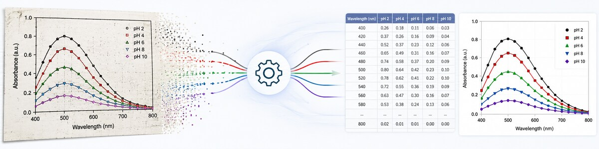
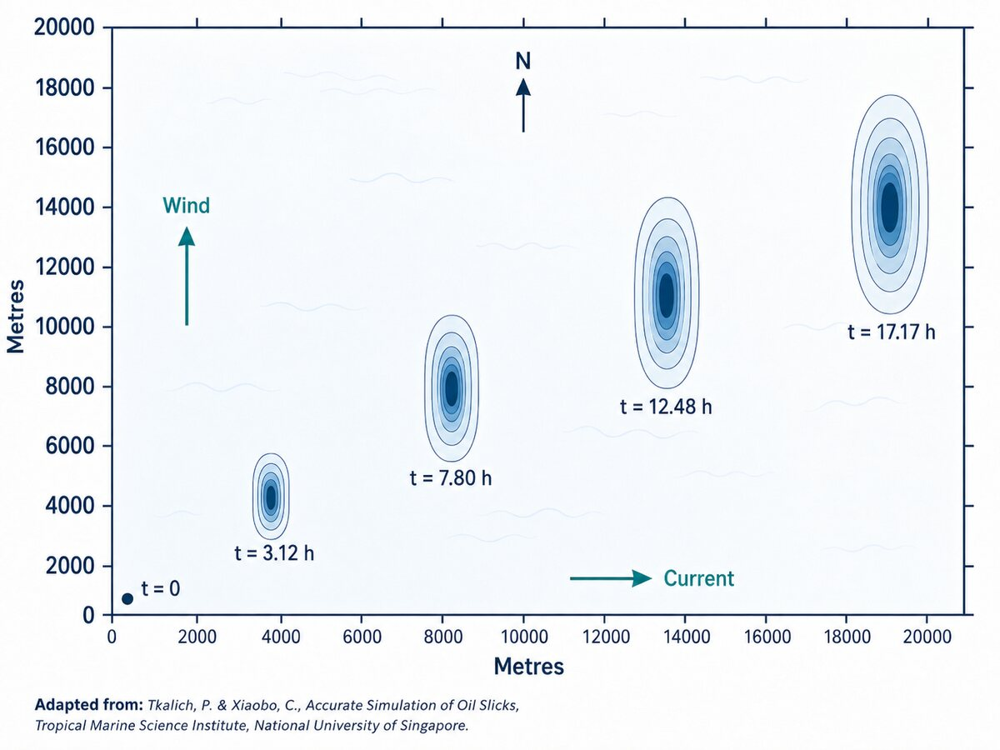
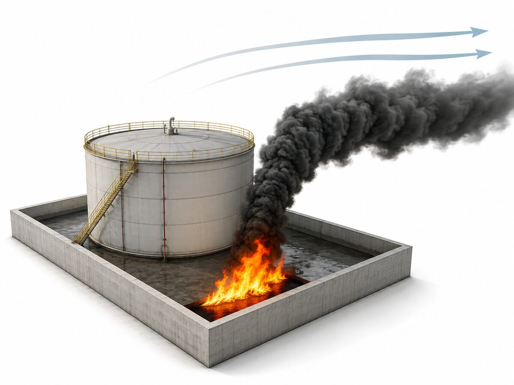
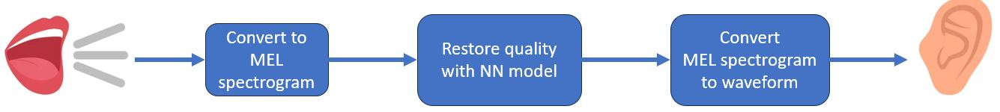

I build scientific software that turns engineering, simulation, and data-analysis problems into practical Python tools.
My work combines Computational Fluid Dynamics, technical safety, fire and explosion modelling, numerical methods, and applied data science.
Python
NumPy / Pandas
Jupyter / Matplotlib
Linux / CLI
HPC Workflows
ANSYS CFX
FLACS / KFX / FDS
Multiphase Flow
Fire, Explosion & Dispersion
Heat Transfer / Combustion
ERA / FRA / QRA
Fire & Gas Mapping
Offshore / Onshore Safety
Probabilistic Analysis
Technical Reporting
Scikit-learn
PyTorch / TensorFlow / Keras
Neural Networks
Statistics / Monte Carlo
Power BI / Google Cloud

Plot Digitizer recovers numerical x-y data from images of scientific graphs without requiring the user to click along every curve manually. After axis calibration, the application removes non-data elements such as the frame, legend, and background, separates the plotted traces, reconstructs the curves in calibrated coordinates, and provides the result for review and export.
The data-science challenge is robust curve separation in noisy raster images. The pipeline combines engineered colour features, K-means initialisation, strict non-overlapping hyperboxes in a 14-dimensional colour space, and iterative refinement using a custom spatial curve-shape loss. A small neural network is used only for uncertain background-bound estimation; the final classification remains explicit and inspectable rather than relying on an end-to-end segmentation model.
Highlights: image processing, feature engineering, K-means clustering, custom objective functions, iterative optimisation, interpretable classification, targeted neural networks, and multi-stage pipeline validation.
View Project
A time-dependent 2D Eulerian model for simulating an oil slick on the sea surface. The model couples oil thickness and transport with a simplified two-band wave field, creating a closed feedback loop in which wind drives waves, oil damps waves, waves influence slick motion, and the evolving slick changes the wave field.
Highlights: Python, numerical modelling, finite-volume methods, coupled physical systems, CFD thinking, modular scientific software, and simulation post-processing.
View Project
A Tkinter front-end for FDS that automates the setup, execution, and post-processing of large batches of fire and explosion simulations while keeping the generated FDS input files transparent and editable. It supports parametric explosion and pool-fire cases, probe grids, monitoring volumes, batch generation, and structured Excel output.
Highlights: Python, Tkinter, FDS automation, parametric simulation, fire and explosion modelling, batch workflows, and engineering post-processing.
View Project
An AI-based audio-enhancement experiment for noisy or bandwidth-limited microphones. Audio is transformed into mel-spectrograms and processed by a lightweight neural network designed to restore degraded frequency information while remaining suitable for low-latency use.
Highlights: Python, audio processing, mel-spectrograms, TensorFlow / Keras, neural networks, signal restoration, and real-time ML constraints.
View ProjectA team NLP and machine-learning project that turns large volumes of car-owner reviews into useful decision support: recommendations for similar models plus concise summaries of what owners say about specific aspects of a car.
My contribution: I built the review-summarisation pipeline. Non-English reviews were first translated, then a bag-of-words text model was used to identify comments relating to specific subjects such as reliability and cabin comfort. The selected text was passed through two different neural summarisation models in sequence; splitting the task across two stages avoided the repetition and context-length problems that appeared when a single summariser was given too much review text at once.
Highlights: NLP pipeline design, multilingual text preprocessing, bag-of-words modelling, subject-specific review extraction, neural text summarisation, handling model context limits, and applied machine learning.
View Project